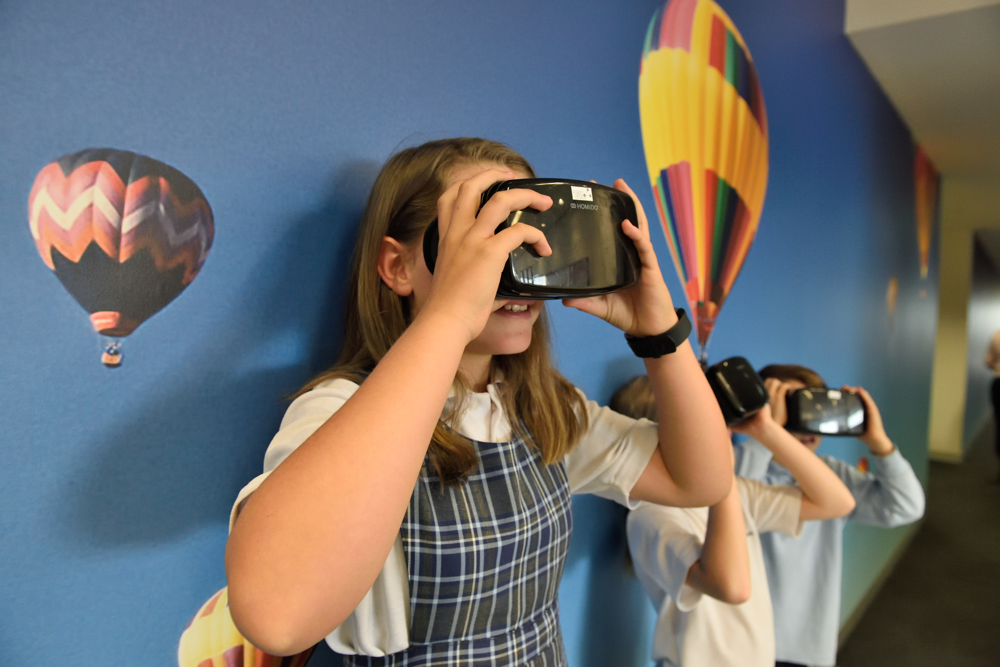

Vr For Less Fortunate Youth
Video games can be an outlet for many kids, unfortunately not all kids have access to these types of things as they can get pricey. Thats where we come in, we provide a club after school for kids who want to play. These games might improve kids hand–eye coordination and problem-solving skills. Vr also requires kids to actually move or manipulate the game through their own physical movement so kids arent staying sedentary.
Virtual Therapy

Virtual Therapy can be used to help with fears such as fear of flying, public speaking, spiders, and many more scenarios that can cause people anxiety, putting people through virtual therapy can help people with their anxiety. Some clinicians have even used this to integrate exposure therapy for veterans with PTSD.
Vr For Med Students

Anatomy forms the foundation for much of what a medical student needs to learn and what a doctor needs to know, but it is often a dreaded memorization ordeal and a challenge to see how all the bones, muscles, nerves and organs fit together. Cadavers and textbooks have limitations in what they can convey. Virtual reality improves upon learning from a cadaver by its ability to go from the skin layer all the way down to the bones, and back again.
Like What You See?
Come Checkout More Projects
Who We Are
We are a group comprised of collaborators, contributors, and volunteers from diverse groups including minorities helping people who otherwise won’t have access to this kind of technology.